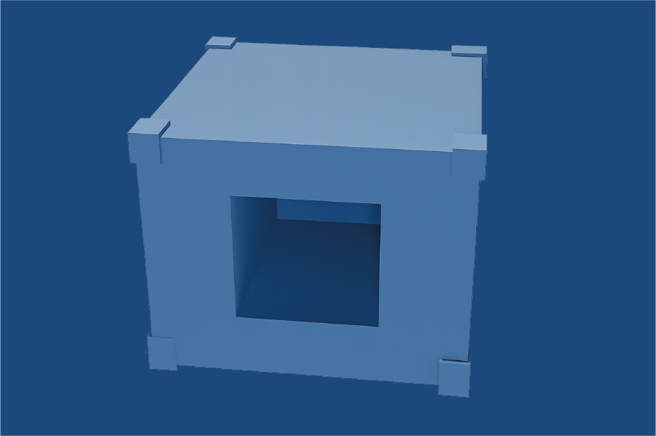

Schéma zapojení



Naše chytrá ledniceZjednodušený princip chlazení v našem modelu.
Nejběžnější typ – pracuje na stlačování a expanzi chladiva.
Využívá teplo k pohonu okruhu. Tichý, ale méně účinný.
Chladivo se váže na pevnou látku. Bez pohyblivých částí.
Elektrický proud vytváří teplotní rozdíl mezi dvěma stranami.
Jednoduchý, bezpečný, bez pohyblivých částí. Pro školní projekt ideální volba.
Elektrický proud vytváří teplotní rozdíl.
Ochladí vnitřní prostor lednice.
Teplo je odváděno ven vodním chlazením.
Radiátor odvádí teplo do okolí.
ESP32 řídí výkon Peltierova článku pomocí PWM a MOSFET tranzistoru.
Řídicí jednotka systému.
Reguluje proud do článku.
Měří vnitřní teplotu.
Hlavní chladicí prvek.
Konstrukce využívá principu „krabice v krabici“ s pěnovou izolací.
Nosná konstrukce z polykarbonátu.
Pružný, pevný a nárazuvzdorný materiál, který spolehlivě odolává povětrnostním vlivům
Chlazený prostor s chladiči.

Montážní pěna minimalizuje tepelné ztráty.
±1 °C od cílové hodnoty.
20 °C → 5 °C za 18 minut.